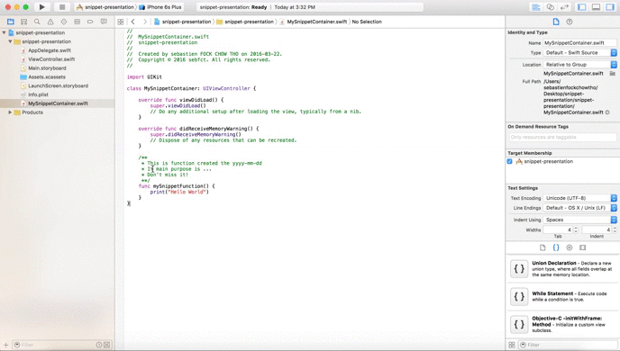

How to use snippets with xCode
Jeffrey has introduced the art of snipping with xCode during his presentation. This feature allows you to save and alias any content in your code in order to reproduce it later, this is really powerful and can help you to handle a presentation for example (saving you the time to switch between your already did at home and the in progress presentation code), and thanks to Apple's developers it's really simple to use:
- Select the code you want to set as snippet
- Open the
Code Snippet Library - Drag the selected code to the
Code Snippet Library - Edit the created snippet and add a
Completion shortcut - Start typing your shortcut anywhere in your code and xCode will display the snippet
The following is an illustration of these steps:
